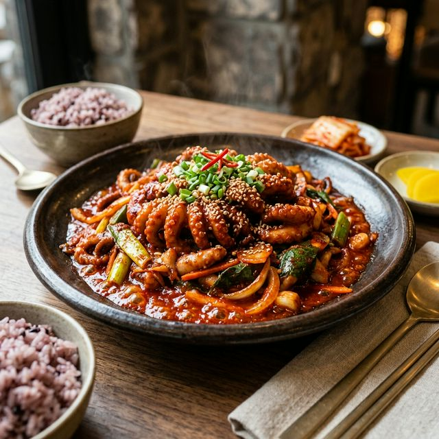
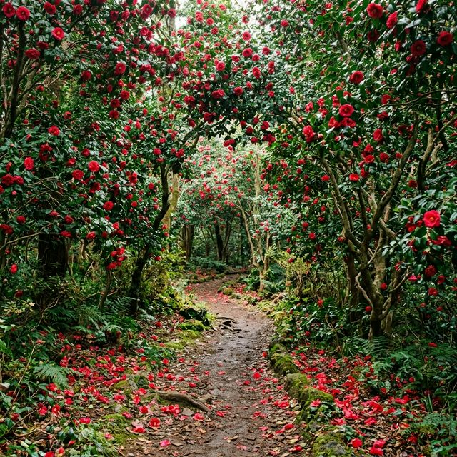

가장 많은 분이 궁금해하시는 것이 바로 '올해 주꾸미 가격은 얼마인가요?'일 것입니다. 최근 남획과 수온 변화로 어획량이 줄면서 주꾸미가 '금(金)꾸미'로 불리기도 했지만, 다행히 2026년 서해 앞바다의 조황은 평년 수준을 회복하며 비교적 안정적인 가격대를 형성하고 있습니다.
현지 상인들의 팁에 따르면, 주꾸미의 맛을 제대로 느끼려면 무조건 샤브샤브로 시작해야 합니다. 시원한 조개 육수에 냉이와 미나리를 듬뿍 넣고 살짝 데쳐 먹으면, 봄나물의 향긋함과 야들야들한 주꾸미 다리의 식감이 완벽한 조화를 이룹니다. 다리를 먼저 먹고 머리는 5분 이상 충분히 익히면, 마치 찹쌀밥을 씹는 듯한 고소하고 녹진한 알의 풍미를 느낄 수 있습니다.
서천 축제가 가족 단위 관광객들에게 사랑받는 결정적 이유는 다채로운 체험 프로그램 때문입니다. 그중에서도 백미는 주말에만 열리는 '어린이 주꾸미 뜰채 낚시 체험'입니다. 대형 수조에 풀어놓은 살아있는 주꾸미를 제한 시간 내에 아이들이 직접 뜰채로 낚아 올리는 이 이벤트는, 현장에서 예약이 10분 만에 마감될 정도로 인기가 높습니다.
| 프로그램 명 | 운영 일시 | 참가 비용 | 비고 및 혜택 |
|---|---|---|---|
| 어린이 주꾸미 뜰채 낚시 | 토/일 (11:00, 14:00) | 15,000원 | 잡은 주꾸미(최대 3마리) 증정, 서천 상품권 2천 원 환급 |
| 주꾸미 요리 장터 | 매일 10:00 ~ 19:00 | 메뉴별 상이 | 샤브샤브, 볶음, 주꾸미 파전 등 먹거리 장터 연일 운영 |
| 수산물 경매 이벤트 | 매일 15:00 | 무료 (입찰금 별도) | 질 좋은 수산물을 도매가 이하로 득템할 수 있는 눈치 게임 |
| 동백정 포토존 인증샷 | 상시 운영 | 무료 | SNS 업로드 시 지역 특산품 (김, 소금 등) 랜덤 룰렛 참여권 |
미식으로 배를 채웠다면 이제 눈을 호강시킬 차례입니다. 마량진항에서 도보로 5분만 언덕을 오르면 서천 마량리 동백나무 숲(천연기념물 제169호)이 나타납니다. 약 500년의 수령을 자랑하는 80여 그루의 웅장한 동백나무가 빽빽하게 군락을 이루어, 터널을 걷는 내내 붉은 비가 내리는 듯한 장관을 연출합니다.

봄의 전령사인 벚꽃이 연분홍빛의 여리여리함을 뽐낸다면, 동백꽃은 짙은 선홍빛 꽃망울을 통째로 툭 뱉어내는 묵직한 기품이 있습니다. 언덕의 가장 높은 곳에 자리한 '동백정(冬柏亭)'루각에 오르면, 눈 앞에는 푸른 칠산바다의 탁 트인 풍경이, 등 뒤로는 붉은 동백 숲이 어우러져 한 폭의 수묵담채화를 완성합니다.
어느 축제장이나 주차 문제는 가장 큰 골칫거리입니다. 서천 마량진항 일대는 도로가 좁아 주말 피크 타임(오전 11시 ~ 오후 3시)에는 진입 도로 2km 전방부터 차가 멈춰 서는 정체가 발생합니다.
스마트 접근법: 만약 주말 오전에 도착하신다면, 차량을 홍원항이나 인근 서도초등학교 임시 공영 주차장에 미리 세우고 지자체에서 운영하는 무료 셔틀버스를 이용하는 것이 스트레스를 줄이는 팁입니다. 반대로 점심 식사 이후 도착하는 일정이라면, 차라리 춘장대 해수욕장에서 드라이브하며 바다를 즐기다가 오후 느지막이 4시 이후 축제장에 진입하여 주꾸미 저녁 식사와 일몰 감상을 노리는 '역발상'이 먹힙니다.
봄 미각의 여왕인 알배기 주꾸미와, 차가운 해풍을 견디고 피어난 붉은 동백꽃. 이 두 가지 압도적인 매력을 동시에 즐길 수 있는 서천 동백꽃 주꾸미 축제는 전국 어디에서도 찾을 수 없는 가장 완벽한 당일치기 봄 여행 코스입니다. 따뜻해지는 4월 초순 주말, 웅크렸던 몸과 마음을 활짝 펴고 서해안 마량진항으로 미식 여행을 떠나보는 건 어떨까요?